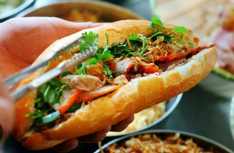
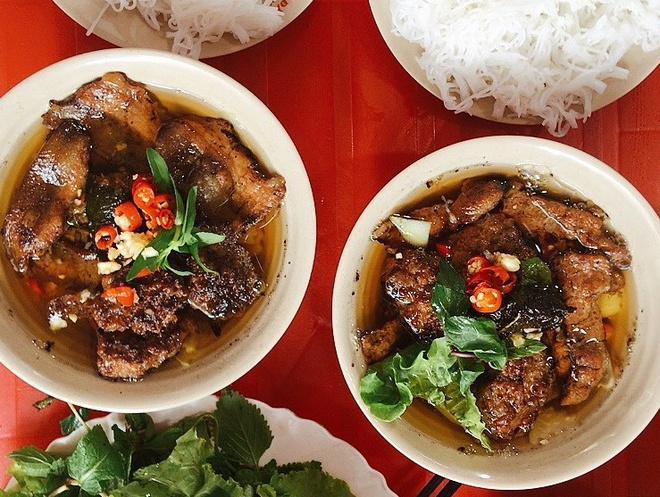

- Phở Hà Nội
- Phở Lý Quốc Sư
- Phở Thìn Lò Đúc
- Phở Bát Đàn
- Bánh Mì Việt Nam
- Bún Chả Hà Nội
- Bún chả Hương Liên (Bún chả Obama)
- Bún chả Đắc Kim Ngoài ra còn rất nhiều quán ngon khác.

Phở Hà Nội là di sản văn hóa ẩm thực đặc sắc của thủ đô, là niềm tự hào của ẩm thực Việt Nam, nổi bật với nước dùng thanh ngọt, trong vắt ninh từ xương ống bò, kết hợp cùng bánh phở mềm dẻo và thịt bò tươi ngon.
- Một số quán phở nổi tiếng:

Bánh mì Việt Nam là món ăn đường phố nổi tiếng, nổi bật với lớp vỏ mỏng giòn rụm bên ngoài và phần ruột mềm xốp bên trong, Bánh mì Việt Nam hiện diện khắp nơi trên thế giới và được nhiều tạp chí, chuyên trang ẩm thực uy tín tôn vinh, thậm chí còn xuất hiện trong từ điển tiếng Anh

Bún chả là một trong những món ăn tinh túy nhất của ẩm thực Việt Nam, đặc biệt là đặc sản truyền thống của Hà Nội. Món ăn là sự kết hợp hoàn hảo giữa những sợi bún mềm, thịt lợn nướng trên than hoa thơm lừng và bát nước chấm chua ngọt đậm đà.
- Dưới đây là một số quán Bún Chả nổi tiếng tại Hà Nội: